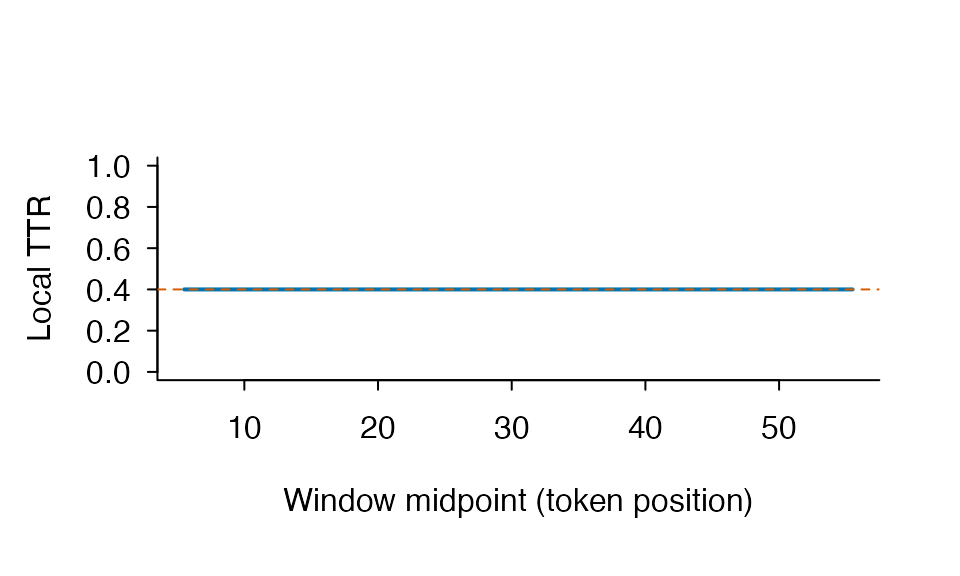

There are two common starting points. If you already have one
character value per token, use lexdiv_metrics(). If you
have ordinary prose, use lexdiv_metrics_text(). The second
route records how the text was tokenized, normalized, and optionally
lemmatized before it calls the same metric core.
library(ldfreq)
tokens <- c("the", "cat", "saw", "the", "other", "cat")
result <- lexdiv_metrics(tokens, metrics = c("ttr", "rttr", "yule_k"))
result
#> <lexdiv_results: 3 metrics; contract 0.2.0>
#> metric_id value status missing_reason N V below_quality_floor
#> 1 ttr 0.6666667 ok <NA> 6 4 FALSE
#> 2 rttr 1.6329932 ok <NA> 6 4 FALSE
#> 3 yule_k 1111.1111111 ok <NA> 6 4 TRUEFor a named character vector or an ID/text table, use
lexdiv_tokenize_batch() and
lexdiv_metrics_text_batch(); see English tokenization and document
input. For files on disk, the TXT/folder/CSV
walkthrough runs with installed sample files and shows where to
substitute your own data. Use tokenizer = "english" to
select the English lexical rules. The examples below retain the original
Unicode default so their measurement choices stay explicit.
Raw text without hidden preprocessing
The shortest raw-text workflow is a direct call to
lexdiv_metrics_text(). Normalization, case, and number
handling are explicit arguments rather than global options.
raw_result <- lexdiv_metrics_text(
"Cats and cat ran run.",
normalization = "NFC",
case = "preserve",
metrics = "ttr"
)
raw_result
#> <lexdiv_text_results> 5/5 eligible tokens | unit=surface | inclusion=all
#> <lexdiv_results: 1 metric; contract 0.2.0>
#> metric_id value status missing_reason N V below_quality_floor
#> 1 ttr 1 ok <NA> 5 5 FALSECall lexdiv_tokenize() separately when you want to
inspect or annotate the tokens first. Its offsets refer to the processed
text, and its provenance keeps source and processed text hashes without
storing the source text itself.
tokenization <- lexdiv_tokenize(
"Cats and cat ran run.",
normalization = "NFC",
case = "preserve"
)
tokenization
#> <lexdiv_tokenization> 5 tokens | NFC | preserve | numbers=removed | ldfreq-unicode-word-tokenizer 0.1.0
#> token_index start end surface is_number
#> 1 1 4 Cats FALSE
#> 2 6 8 and FALSE
#> 3 10 12 cat FALSE
#> 4 14 16 ran FALSE
#> 5 18 20 run FALSELemma and content-word analyses require an explicit annotation
source. The example annotations are project-authored fixtures, not a
recommended universal lemmatizer. Missing annotations would be excluded
and counted in unit_coverage rather than imputed.
UPOS backend ID and version are always explicit and separate from lemma backend ID and version, even if one documented pipeline generated both layers.
annotated <- lexdiv_lemmatize(
tokenization,
lemmas = c("cat", "and", "cat", "run", "run"),
upos = c("NOUN", "CCONJ", "NOUN", "VERB", "VERB"),
backend_id = "vignette-fixture",
backend_version = "1",
upos_backend_id = "vignette-upos-fixture",
upos_backend_version = "1"
)
lemma_content <- lexdiv_metrics_text(
annotated,
unit = "lemma",
word_inclusion = "content",
metrics = "ttr"
)
lemma_content$results
#> <lexdiv_results: 1 metric; contract 0.2.0>
#> metric_id value status missing_reason N V below_quality_floor
#> 1 ttr 0.5 ok <NA> 4 2 FALSE
lemma_content$token_audit
#> token_index surface selected_unit unit_match_rule upos eligible
#> 1 1 Cats cat <NA> NOUN TRUE
#> 2 2 and and <NA> CCONJ FALSE
#> 3 3 cat cat <NA> NOUN TRUE
#> 4 4 ran run <NA> VERB TRUE
#> 5 5 run run <NA> VERB TRUE
#> exclusion_reason
#> 1 <NA>
#> 2 non_content_upos
#> 3 <NA>
#> 4 <NA>
#> 5 <NA>
lemma_content$preprocessing
#> $contract_id
#> [1] "ldfreq-preprocessing"
#>
#> $contract_version
#> [1] "0.4.0"
#>
#> $tokenization
#> $tokenization$contract_id
#> [1] "ldfreq-preprocessing"
#>
#> $tokenization$contract_version
#> [1] "0.4.0"
#>
#> $tokenization$tokenizer_id
#> [1] "ldfreq-unicode-word-tokenizer"
#>
#> $tokenization$tokenizer_version
#> [1] "0.1.0"
#>
#> $tokenization$normalization
#> [1] "NFC"
#>
#> $tokenization$case
#> [1] "preserve"
#>
#> $tokenization$keep_numbers
#> [1] FALSE
#>
#> $tokenization$token_pattern
#> [1] "[\\p{L}\\p{M}\\p{N}]+(?:['’\\-‐‑][\\p{L}\\p{M}\\p{N}]+)*"
#>
#> $tokenization$source_text_sha256
#> [1] "5d33ea4730a56cb3c2ac4bd306ac925d31afc67a9daeb5abf5c7ce718ce1d544"
#>
#> $tokenization$processed_text_sha256
#> [1] "5d33ea4730a56cb3c2ac4bd306ac925d31afc67a9daeb5abf5c7ce718ce1d544"
#>
#> $tokenization$token_table_sha256
#> [1] "46c007ee7a36efea8e8f48b4edf0ca7a44d4aac4c1a9fbce075d851525ad29e7"
#>
#> $tokenization$input_characters
#> [1] 21
#>
#> $tokenization$processed_characters
#> [1] 21
#>
#> $tokenization$output_tokens
#> [1] 5
#>
#> $tokenization$annotation
#> $tokenization$annotation$method
#> [1] "supplied"
#>
#> $tokenization$annotation$backend_id
#> [1] "vignette-fixture"
#>
#> $tokenization$annotation$backend_version
#> [1] "1"
#>
#> $tokenization$annotation$dictionary
#> NULL
#>
#> $tokenization$annotation$upos_backend_id
#> [1] "vignette-upos-fixture"
#>
#> $tokenization$annotation$upos_backend_version
#> [1] "1"
#>
#> $tokenization$annotation$lemma_tokens
#> [1] 5
#>
#> $tokenization$annotation$lemma_coverage
#> [1] 1
#>
#> $tokenization$annotation$upos_tokens
#> [1] 5
#>
#> $tokenization$annotation$upos_coverage
#> [1] 1
#>
#>
#>
#> $selected_unit
#> [1] "lemma"
#>
#> $word_inclusion
#> [1] "content"
#>
#> $content_upos
#> [1] "ADJ" "ADV" "NOUN" "PROPN" "VERB"
#>
#> $input_tokens
#> [1] 5
#>
#> $eligible_tokens
#> [1] 4
#>
#> $excluded_tokens
#> [1] 1
#>
#> $unit_coverage
#> [1] 0.8For a quick English lemma baseline, the optional
textstem backend can be selected explicitly. It supplies
lemmas only; it does not infer UPOS tags, so a content-word analysis
still needs tags from a separately identified source.
if (requireNamespace("textstem", quietly = TRUE)) {
automatic_lemmas <- lexdiv_lemmatize(
lexdiv_tokenize("The cats were running and studies.", case = "lower"),
method = "textstem"
)
automatic_lemmas$tokens[, c("surface", "lemma")]
automatic_lemmas$provenance$annotation
}
#> $method
#> [1] "textstem"
#>
#> $backend_id
#> [1] "textstem::lemmatize_words"
#>
#> $backend_version
#> [1] "0.1.4"
#>
#> $dictionary
#> $dictionary$source
#> [1] "lexicon"
#>
#> $dictionary$id
#> [1] "lexicon::hash_lemmas"
#>
#> $dictionary$version
#> [1] "1.3.2"
#>
#> $dictionary$sha256
#> [1] "d46e415a53f4f5133ee3e567902d2b51ce1f4928061eb35f84cf5bcfc7fc993d"
#>
#> $dictionary$hash_method
#> [1] "sha256-utf8-byte-length-pairs-v1"
#>
#> $dictionary$entries
#> [1] 41531
#>
#> $dictionary$query_casefold
#> [1] "base-tolower"
#>
#> $dictionary$query_locale
#> [1] "C.UTF-8"
#>
#> $dictionary$unknown_form_policy
#> [1] "surface"
#>
#>
#> $upos_backend_id
#> NULL
#>
#> $upos_backend_version
#> NULL
#>
#> $lemma_tokens
#> [1] 6
#>
#> $lemma_coverage
#> [1] 1
#>
#> $upos_tokens
#> [1] 0
#>
#> $upos_coverage
#> [1] 0This separation is deliberate: changing forms to lemmas or restricting the denominator to content words changes the measurement. It is not merely a file cleaning step.
Flemma is a separate lexical unit because it groups forms without
preserving POS distinctions. lexdiv_flemmatize() accepts a
caller-supplied local AntBNC file; it neither bundles nor downloads that
resource. Unknown forms retain a normalized identity value, while token
rows record AntBNC, override, or identity matching.
The flemma adapter and parser identities are supplied by
ldfreq. resource_version and any
override_version are caller-declared, path-free labels;
they are not file-content checks. Because the labels are returned in
provenance and overlap comparability output, they must not contain
paths, secrets, private hashes, or machine-specific details. Local file
names and content hashes are not retained in public flemma
provenance.
flemmas <- lexdiv_flemmatize(
tokenization,
"/path/to/antbnc_lemmas_ver_004.txt",
resource_version = "004"
)
lexdiv_metrics_text(flemmas, unit = "flemma", metrics = "ttr")The raw AntBNC mapping approximates, but does not reproduce, New Word Level Checker. NWLC documents manual word-list alignment. New JACET profiles therefore expose AntBNC-versus-headword conflicts and accept explicit upstream overrides.
Caller-supplied lexical norms
lexdiv_norm_profile() exact-matches caller-prepared
terms against one caller-supplied table. It does not download a norm,
transform lookup terms, or infer that measures with different units and
directions are comparable.
synthetic_norms <- data.frame(
term = c("cat", "run", "other"),
familiarity = c(6, 5, NA_real_),
concreteness = c(5, 3, 4),
stringsAsFactors = FALSE
)
norm_specs <- data.frame(
measure_id = c("familiarity", "concreteness"),
value_column = c("familiarity", "concreteness"),
construct_id = c("subjective_familiarity", "concreteness"),
value_unit = c("seven_point_rating", "seven_point_rating"),
direction = c("higher", "descriptive"),
language = c("English", "English"),
variety = c("unspecified", "unspecified"),
population_id = c("example_adults", "example_adults"),
collection_year = c("2025", "2025"),
valid_min = c(1, 1),
valid_max = c(7, 7),
stringsAsFactors = FALSE
)
norm_resource <- list(
resource_id = "synthetic_norms",
resource_version = "1",
creator = "Project-authored example",
source_reference = "Getting-started synthetic fixture",
data_license = "synthetic-example-only",
transformation_id = "none",
lookup_unit = "lowercase_lemma",
resource_key_normalization_id = "caller-prepared-v1"
)
norm_profile <- lexdiv_norm_profile(
c("cat", "cat", "other", "outside"),
synthetic_norms,
key = "term",
measure_specs = norm_specs,
resource = norm_resource
)
norm_profile$summary[, c(
"measure_id", "weighting", "estimate", "resource_coverage",
"value_coverage", "annotation_coverage", "status"
)]
#> measure_id weighting estimate resource_coverage value_coverage
#> 1 familiarity token 6.000000 0.7500000 0.5000000
#> 2 familiarity type 6.000000 0.6666667 0.3333333
#> 3 concreteness token 4.666667 0.7500000 0.7500000
#> 4 concreteness type 4.500000 0.6666667 0.6666667
#> annotation_coverage status
#> 1 0.6666667 ok
#> 2 0.5000000 ok
#> 3 1.0000000 ok
#> 4 1.0000000 ok
norm_profile$lookup
#> input_index term measure_id lookup_status value value_status
#> 1 1 cat familiarity matched_resource 6 observed
#> 2 1 cat concreteness matched_resource 5 observed
#> 3 2 cat familiarity matched_resource 6 observed
#> 4 2 cat concreteness matched_resource 5 observed
#> 5 3 other familiarity matched_resource NA missing_annotation
#> 6 3 other concreteness matched_resource 4 observed
#> 7 4 outside familiarity unknown_to_resource NA not_applicable_oov
#> 8 4 outside concreteness unknown_to_resource NA not_applicable_oovSummary means are conditional on observed values among matched keys. OOV terms and matched keys with missing values have different lookup states and neither is imputed. Report the resource-, value-, and annotation-coverage columns with the estimate. Caller metadata is recorded as provenance; it is not a license decision or evidence that a measure is valid for a new population. The lookup table retains the supplied lexical terms, so apply the same data-handling care as for the input.
Corpus-relative frequency with coverage
tubelex_profile() applies explicit query normalization
or identity matching. The resource uses Treebank segmentation, which
differs from lexdiv_tokenize(); character-vector alignment
is the caller’s responsibility. It returns original terms, lookup terms,
unmatched rows, token/type coverage, and matched-only conditional
summaries.
# Manually prepared terms illustrate this sentence, not a general tokenizer.
frequency <- tubelex_profile(c("I", "do", "n't", "think", "it", "'s", "a", "book"))
frequency$summary
#> weighting eligible_items matched_items coverage mean_zipf sd_zipf
#> 1 token 8 8 1 6.810781 0.6196608
#> 2 type 8 8 1 6.810781 0.6196608
#> mean_video_prevalence mean_channel_prevalence
#> 1 -0.2204532 -0.2396299
#> 2 -0.2204532 -0.2396299
frequency$coverage
#> $input_tokens
#> [1] 8
#>
#> $input_types
#> [1] 8
#>
#> $eligible_tokens
#> [1] 8
#>
#> $eligible_types
#> [1] 8
#>
#> $matched_tokens
#> [1] 8
#>
#> $unmatched_tokens
#> [1] 0
#>
#> $matched_types
#> [1] 8
#>
#> $unmatched_types
#> [1] 0
#>
#> $token_coverage
#> [1] 1
#>
#> $type_coverage
#> [1] 1
frequency$lookup
#> query_index term lookup_term matched resource_word count videos channels
#> 1 1 I i TRUE i 3794340 83952 50926
#> 2 2 do do TRUE do 1105372 78492 48095
#> 3 3 n't n't TRUE n't 909491 72651 44756
#> 4 4 think think TRUE think 438105 51625 32474
#> 5 5 it it TRUE it 2917104 95070 56204
#> 6 6 's 's TRUE 's 2400420 93407 54909
#> 7 7 a a TRUE a 3637988 101717 59211
#> 8 8 book book TRUE book 56208 12058 8921
#> zipf video_prevalence channel_prevalence
#> 1 7.342551 -0.10018255 -0.12815245
#> 2 6.806923 -0.12938784 -0.15299159
#> 3 6.722213 -0.16297120 -0.18423958
#> 4 6.404994 -0.31135029 -0.32355139
#> 5 7.228367 -0.04617071 -0.08532559
#> 6 7.143702 -0.05383470 -0.09544910
#> 7 7.324276 -0.01682096 -0.06269081
#> 8 5.513220 -0.94290747 -0.88463833TUBELEX is a general YouTube subtitle frequency space. Its values describe frequency and prevalence relative to that corpus; they are not direct measures of proficiency, writing quality, academic register, or context-independent lexical sophistication.
Passing a lexdiv_tokenization object requires
tokenization_mismatch = "allow" for an explicit sensitivity
analysis. High coverage alone cannot validate segmentation. For multiple
documents, tubelex_profile_batch() returns a named list of
complete profiles while loading one verified resource snapshot per call.
See vignette("designing-comparisons", package = "ldfreq")
for a worked design.
New JACET 8000 lexical levels
nj8_profile() maps New JACET 8000 ranks to eight
1,000-rank levels. Omit wordlist to use the bundled table,
redistributed with JACET permission and source attribution. Exact and
cumulative token/type rates keep off-list items in the denominator. An
explicit data frame, CSV, or official-layout XLSX remains supported. The
next example deliberately supplies a small synthetic table so that each
level can be checked by hand.
synthetic_nj8 <- data.frame(
NJ8 = c(1L, 1001L, 6001L, 8000L),
Word = c("the", "develop", "rare", "extreme")
)
levels <- nj8_profile(annotated, synthetic_nj8, unit = "lemma")
levels$summary
#> weighting level level_label items proportion cumulative_items
#> 1 token 1 Level 1 0 0 0
#> 2 token 2 Level 2 0 0 0
#> 3 token 3 Level 3 0 0 0
#> 4 token 4 Level 4 0 0 0
#> 5 token 5 Level 5 0 0 0
#> 6 token 6 Level 6 0 0 0
#> 7 token 7 Level 7 0 0 0
#> 8 token 8 Level 8 0 0 0
#> 9 token NA Off-list 5 1 NA
#> 10 type 1 Level 1 0 0 0
#> 11 type 2 Level 2 0 0 0
#> 12 type 3 Level 3 0 0 0
#> 13 type 4 Level 4 0 0 0
#> 14 type 5 Level 5 0 0 0
#> 15 type 6 Level 6 0 0 0
#> 16 type 7 Level 7 0 0 0
#> 17 type 8 Level 8 0 0 0
#> 18 type NA Off-list 3 1 NA
#> cumulative_proportion
#> 1 0
#> 2 0
#> 3 0
#> 4 0
#> 5 0
#> 6 0
#> 7 0
#> 8 0
#> 9 NA
#> 10 0
#> 11 0
#> 12 0
#> 13 0
#> 14 0
#> 15 0
#> 16 0
#> 17 0
#> 18 NA
levels$coverage
#> $input_tokens
#> [1] 5
#>
#> $eligible_tokens
#> [1] 5
#>
#> $excluded_tokens
#> [1] 0
#>
#> $selection_coverage
#> [1] 1
#>
#> $matched_tokens
#> [1] 0
#>
#> $off_list_tokens
#> [1] 5
#>
#> $token_coverage
#> [1] 0
#>
#> $eligible_types
#> [1] 3
#>
#> $matched_types
#> [1] 0
#>
#> $off_list_types
#> [1] 3
#>
#> $type_coverage
#> [1] 0Use plot(levels) for token proportions and their
cumulative curve, or plot(levels, weighting = "type") for
normalized types.
For an object created by lexdiv_flemmatize(), set
unit = "flemma" and use
flemma_conflict = "antbnc", "wordlist", or
"error". The lossless lookup retains the chosen resolution
and the alternative surface-headword rank/level.
Reading results
Each requested metric receives one row. The status and
missing_reason columns state whether a value is available;
requested_parameters and effective_parameters
are list-columns. Contract and schema identifiers are ordinary columns
so that they survive row binding and tabular serialization.
status |
Meaning |
|---|---|
ok |
The requested method produced a value. |
missing |
The document was valid, but the method’s defined domain or requested parameter did not permit a value. |
invalid_input |
At least one invalid token made the document invalid; it was not silently deleted. |
Common missing_reason values distinguish empty input,
insufficient tokens for a formula, a document shorter than the requested
window/segment/sample, a zero denominator, and a missing MTLD factor.
Structural request errors such as an unknown metric ID stop the call
instead of creating a result row.
Short documents do not cause the requested method to change. For example, an MATTR window larger than the document yields a structured missing result rather than a smaller implicit window.
lexdiv_metrics(tokens, metrics = "mattr", window_length = 50L)
#> <lexdiv_results: 1 metric; contract 0.2.0>
#> metric_id value status missing_reason N V
#> 1 mattr NA missing too_short_for_requested_parameter 6 4
#> below_quality_floor
#> 1 TRUEExpected-TTR D fits an explicit D curve to exact finite-population expected TTR values. It uses no random sampling or arbitrary D cap and is not CLAN VOCD.
lexdiv_metrics(
rep(c("a", "b", "a", "c"), 20),
metrics = "expected_ttr_d"
)
#> <lexdiv_results: 1 metric; contract 0.2.0>
#> metric_id value status missing_reason N V below_quality_floor
#> 1 expected_ttr_d 0.1164681 ok <NA> 80 3 FALSEInterpreting values
Within the same exact method and design, Maas a-squared and Yule’s K conventionally decrease as repetition decreases. TTR, RTTR, CTTR, Herdan’s C, MSTTR, MATTR, MTLD, HD-D, expected-TTR D, and Yule’s I conventionally increase with observed lexical variety or lower repetition. These methods primarily operationalize lexical variety and repetition rather than the full multidimensional lexical-diversity construct. Direction is meaningful only within the same method, parameters, tokenization, normalization, sampling design, and comparable texts. Scores from different metric IDs are not interchangeable because their scales and length sensitivities differ.
The metrics describe lexical-distribution properties of the supplied tokens. They are not direct measures of language proficiency, writing quality, reader response, or communicative effectiveness. A separate validated study design is needed to make claims about those constructs.
Multiple documents
Batch input must carry explicit, unique document identifiers.
documents <- list(
document_a = c("one", "two", "one"),
document_b = c("alpha", "beta", "gamma", "delta")
)
lexdiv_metrics_batch(documents, metrics = c("ttr", "hdd"))
#> <lexdiv_batch_results: 2 documents; 4 metric records; schema 0.1.0>
#> document_id metric_id value status missing_reason N V
#> 1 document_a ttr 0.6666667 ok <NA> 3 2
#> 2 document_a hdd NA missing too_short_for_requested_parameter 3 2
#> 3 document_b ttr 1.0000000 ok <NA> 4 4
#> 4 document_b hdd NA missing too_short_for_requested_parameter 4 4
#> below_quality_floor
#> 1 FALSE
#> 2 TRUE
#> 3 FALSE
#> 4 TRUETo compare the same documents with one explicit reference vocabulary, use the directional reference-coverage API. It returns token- and type-weighted rows separately, with the numerator and denominator retained for downstream models.
reference_coverage <- lexdiv_reference_coverage(
documents,
reference = c("one", "two", "alpha"),
reference_id = "study_list"
)
reference_coverage$summary[, c(
"document_id", "weighting", "value", "numerator", "denominator", "status"
)]
#> document_id weighting value numerator denominator status
#> 1 document_a token 1.00 3 3 ok
#> 2 document_a type 1.00 2 2 ok
#> 3 document_b token 0.25 1 4 ok
#> 4 document_b type 0.25 1 4 okThis call performs exact matching only. Document repetition changes
token coverage but not type coverage, and an empty document remains a
structured missing result. Use details = "terms" only when
exact lexical strings may be retained in the result. This is coverage by
the supplied list, not a claim that the list or its matches measure
proficiency or writing quality.
For a tidy one-token-per-row table, make the document boundary
explicit before calling the batch API. The same adapter accepts
quanteda tokens objects through their registered
as.list() method.
tidy_tokens <- data.frame(
document_id = c("a", "a", "b", "b"),
token = c("one", "two", "three", "three")
)
tidy_documents <- lexdiv_as_documents(tidy_tokens)
tidy_long <- lexdiv_metrics_batch(
tidy_documents,
metrics = c("ttr", "maas")
)
lexdiv_widen(tidy_long, values_from = "value")
#> <lexdiv_wide_results: 2 rows; 3 columns>
#> document_id ttr maas
#> 1 a 1.0 0.000000
#> 2 b 0.5 1.442695Base-R plot methods require one metric selection when several incompatible metric scales are present.
plot(tidy_long, metric_id = "ttr")Plots use color by default. Set monochrome = TRUE for
black and gray output, for example
plot(tidy_long, metric_id = "ttr", monochrome = TRUE). In
both color modes, metric and screening plots use triangles for points
below the advisory threshold and circles for other points. Explicit
pch values are retained. No title or subtitle is added
automatically: put figure numbers, titles and notes outside the image in
the manuscript. This option changes presentation only; the selected rows
and invisible return are the same in both modes. The default font is
sans serif, tick labels are horizontal and the frame is open. Explicit
family, las and bty arguments
override these defaults. See the report guide for exporting at the final
publication size.
Explicit method profiles
A profile plan records parameter variants before computation. The
length_50_100 preset adds MSTTR and MATTR settings without
duplicating MTLD or turning descriptive token floors into alternative
metric values.
plan <- lexdiv_plan(presets = "length_50_100")
profile <- lexdiv_profile(tokens, plan)
head(profile)
#> <lexdiv_profile_results: 6 specifications; schema 0.1.0>
#> request_id metric_id value status missing_reason N V
#> 1 ttr ttr 0.6666667 ok <NA> 6 4
#> 2 rttr rttr 1.6329932 ok <NA> 6 4
#> 3 cttr cttr 1.1547005 ok <NA> 6 4
#> 4 herdan herdan 0.7737056 ok <NA> 6 4
#> 5 maas maas 0.1262973 ok <NA> 6 4
#> 6 msttr msttr NA missing too_short_for_requested_parameter 6 4
#> below_quality_floor
#> 1 FALSE
#> 2 FALSE
#> 3 FALSE
#> 4 FALSE
#> 5 FALSE
#> 6 TRUE
screen <- lexdiv_screen(profile)
head(screen)
#> screen_schema_id screen_schema_version profile_schema_id
#> 1 lexdiv-r-screen-result 0.1.0 lexdiv-r-profile-result
#> 2 lexdiv-r-screen-result 0.1.0 lexdiv-r-profile-result
#> 3 lexdiv-r-screen-result 0.1.0 lexdiv-r-profile-result
#> 4 lexdiv-r-screen-result 0.1.0 lexdiv-r-profile-result
#> 5 lexdiv-r-screen-result 0.1.0 lexdiv-r-profile-result
#> 6 lexdiv-r-screen-result 0.1.0 lexdiv-r-profile-result
#> profile_schema_version plan_md5 request_index
#> 1 0.1.0 b814e7fd802afac816d4a516fa1f4c4b 1
#> 2 0.1.0 b814e7fd802afac816d4a516fa1f4c4b 1
#> 3 0.1.0 b814e7fd802afac816d4a516fa1f4c4b 2
#> 4 0.1.0 b814e7fd802afac816d4a516fa1f4c4b 2
#> 5 0.1.0 b814e7fd802afac816d4a516fa1f4c4b 3
#> 6 0.1.0 b814e7fd802afac816d4a516fa1f4c4b 3
#> request_id specification_id metric_id
#> 1 ttr ttr-4fb55d484c9910369ed7bfb8e1bb1631 ttr
#> 2 ttr ttr-4fb55d484c9910369ed7bfb8e1bb1631 ttr
#> 3 rttr rttr-625d1c2f87613e36d94824f3d4ccd257 rttr
#> 4 rttr rttr-625d1c2f87613e36d94824f3d4ccd257 rttr
#> 5 cttr cttr-0541216b812c575de688815847d80352 cttr
#> 6 cttr cttr-0541216b812c575de688815847d80352 cttr
#> method_id N screen_id minimum_tokens passes_screen
#> 1 ttr_v_over_n_v1 6 tokens_50 50 FALSE
#> 2 ttr_v_over_n_v1 6 tokens_100 100 FALSE
#> 3 rttr_guiraud_v_over_sqrt_n_v1 6 tokens_50 50 FALSE
#> 4 rttr_guiraud_v_over_sqrt_n_v1 6 tokens_100 100 FALSE
#> 5 cttr_v_over_sqrt_2n_v1 6 tokens_50 50 FALSE
#> 6 cttr_v_over_sqrt_2n_v1 6 tokens_100 100 FALSEMATTR has an additional local diagnostic surface. It accepts a MATTR-only canonical plan and returns each complete moving-window value plus the number and nominal weight of windows containing each token position.
methods <- lexdiv_methods()
mattr_method <- methods$method_id[methods$metric_id == "mattr"]
mattr_plan <- lexdiv_plan(
presets = character(),
grids = lexdiv_grid(
mattr_method,
"window_length",
c(10, 20),
request_id_prefix = "mattr"
)
)
local_mattr <- lexdiv_mattr_profile(rep(tokens, 10), mattr_plan)
local_mattr$summary
#> <lexdiv_profile_results: 2 specifications; schema 0.1.0>
#> request_id metric_id value status missing_reason N V below_quality_floor
#> 1 mattr_1 mattr 0.4 ok <NA> 60 4 FALSE
#> 2 mattr_2 mattr 0.2 ok <NA> 60 4 FALSE
head(local_mattr$windows)
#> plan_md5 request_index request_id
#> 1 054deeb3bbc8ad065e56423650c6d90a 1 mattr_1
#> 2 054deeb3bbc8ad065e56423650c6d90a 1 mattr_1
#> 3 054deeb3bbc8ad065e56423650c6d90a 1 mattr_1
#> 4 054deeb3bbc8ad065e56423650c6d90a 1 mattr_1
#> 5 054deeb3bbc8ad065e56423650c6d90a 1 mattr_1
#> 6 054deeb3bbc8ad065e56423650c6d90a 1 mattr_1
#> specification_id metric_id method_id
#> 1 mattr-49df2cfded9c0b1739bab49c65494921 mattr mattr_sliding_step1_v1
#> 2 mattr-49df2cfded9c0b1739bab49c65494921 mattr mattr_sliding_step1_v1
#> 3 mattr-49df2cfded9c0b1739bab49c65494921 mattr mattr_sliding_step1_v1
#> 4 mattr-49df2cfded9c0b1739bab49c65494921 mattr mattr_sliding_step1_v1
#> 5 mattr-49df2cfded9c0b1739bab49c65494921 mattr mattr_sliding_step1_v1
#> 6 mattr-49df2cfded9c0b1739bab49c65494921 mattr mattr_sliding_step1_v1
#> window_index window_start window_end window_midpoint window_length
#> 1 1 1 10 5.5 10
#> 2 2 2 11 6.5 10
#> 3 3 3 12 7.5 10
#> 4 4 4 13 8.5 10
#> 5 5 5 14 9.5 10
#> 6 6 6 15 10.5 10
#> distinct_types value
#> 1 4 0.4
#> 2 4 0.4
#> 3 4 0.4
#> 4 4 0.4
#> 5 4 0.4
#> 6 4 0.4
head(local_mattr$exposure)
#> plan_md5 request_index request_id
#> 1 054deeb3bbc8ad065e56423650c6d90a 1 mattr_1
#> 2 054deeb3bbc8ad065e56423650c6d90a 1 mattr_1
#> 3 054deeb3bbc8ad065e56423650c6d90a 1 mattr_1
#> 4 054deeb3bbc8ad065e56423650c6d90a 1 mattr_1
#> 5 054deeb3bbc8ad065e56423650c6d90a 1 mattr_1
#> 6 054deeb3bbc8ad065e56423650c6d90a 1 mattr_1
#> specification_id metric_id method_id
#> 1 mattr-49df2cfded9c0b1739bab49c65494921 mattr mattr_sliding_step1_v1
#> 2 mattr-49df2cfded9c0b1739bab49c65494921 mattr mattr_sliding_step1_v1
#> 3 mattr-49df2cfded9c0b1739bab49c65494921 mattr mattr_sliding_step1_v1
#> 4 mattr-49df2cfded9c0b1739bab49c65494921 mattr mattr_sliding_step1_v1
#> 5 mattr-49df2cfded9c0b1739bab49c65494921 mattr mattr_sliding_step1_v1
#> 6 mattr-49df2cfded9c0b1739bab49c65494921 mattr mattr_sliding_step1_v1
#> position exposure_count window_inclusion_rate nominal_observation_weight
#> 1 1 1 0.01960784 0.001960784
#> 2 2 2 0.03921569 0.003921569
#> 3 3 3 0.05882353 0.005882353
#> 4 4 4 0.07843137 0.007843137
#> 5 5 5 0.09803922 0.009803922
#> 6 6 6 0.11764706 0.011764706
plot(local_mattr, request_id = "mattr_1")
The plotted trajectory is descriptive. The package does not select an optimal window, infer a universal adequate text length, or interpret exposure weights as token-level causal contributions.
The versioned below_quality_floor field and requested
screens are advisory token-count evidence checks. Here,
quality does not mean writing quality, measurement
validity, or reliability. The screens do not change values or parameters
or censor documents. Read them together with status,
missing_reason, N, V, and the
method and parameter identities.
The presets contain eleven methods; experimental expected-TTR D
requires explicit selection. Use lexdiv_methods() and
lexdiv_presets() to inspect the twelve supported methods
and their bounded presets.
Definition sensitivity outside the versioned core
Maas and sequential MTLD have same-name formula and aggregation variants. The separate variant surface makes those choices comparable without changing the canonical registry or silently replacing a method.
variant_catalog <- lexdiv_variant_ids()
variant_catalog
#> family method_id direction
#> 1 maas maas_a2_ln_v1 lower
#> 2 maas maas_a_ln_v1 lower
#> 3 maas maas_a2_log10_v1 lower
#> 4 maas maas_a_log10_v1 lower
#> 5 mtld mtld_seq_bidir_dirmean_lt_min10_linear_tail_v1 higher
#> 6 mtld mtld_seq_bidir_dirmean_lt_min10_finaltail_linear_v1 higher
#> 7 mtld mtld_seq_bidir_mfl_dirmean_lt_min10_finaltail_linear_v1 higher
#> 8 mtld mtld_seq_bidir_mfl_pooled_lt_min10_finaltail_linear_v1 higher
#> scale reference_label
#> 1 a-squared ldfreq-core:maas
#> 2 a common-formula:maas-a-ln
#> 3 a-squared TAALED-0.32:maas
#> 4 a common-formula:maas-a-log10
#> 5 tokens-per-factor ldfreq-core-0.1.0:mtld
#> 6 tokens-per-factor TAALED-0.32:mtldo
#> 7 adjusted-factor-length TAALED-0.32:mtldav
#> 8 adjusted-factor-length TAALED-0.32:mtld
#> comparison_scope
#> 1 ldfreq-core-method
#> 2 formula-comparison-only
#> 3 formula-aligned-with-taaled-0.32-maas-not-full-pipeline-compatibility
#> 4 formula-comparison-only
#> 5 legacy-ldfreq-core-method
#> 6 factorization-and-aggregation-comparator-for-taaled-0.32-not-official-compatibility
#> 7 factorization-and-aggregation-comparator-for-taaled-0.32-not-official-compatibility
#> 8 factorization-and-aggregation-comparator-for-taaled-0.32-not-official-compatibility
variant_results <- lexdiv_variant_metrics(
rep(tokens, 10),
mtld_thresholds = c(0.72, 0.92)
)
variant_results[, c(
"family", "method_id", "reference_label", "value", "status"
)]
#> <lexdiv_variant_results: 12 rows; contract 0.1.0>
#> family method_id
#> 1 maas maas_a2_ln_v1
#> 2 maas maas_a_ln_v1
#> 3 maas maas_a2_log10_v1
#> 4 maas maas_a_log10_v1
#> 5 mtld mtld_seq_bidir_dirmean_lt_min10_linear_tail_v1
#> 6 mtld mtld_seq_bidir_dirmean_lt_min10_linear_tail_v1
#> 7 mtld mtld_seq_bidir_dirmean_lt_min10_finaltail_linear_v1
#> 8 mtld mtld_seq_bidir_dirmean_lt_min10_finaltail_linear_v1
#> 9 mtld mtld_seq_bidir_mfl_dirmean_lt_min10_finaltail_linear_v1
#> 10 mtld mtld_seq_bidir_mfl_dirmean_lt_min10_finaltail_linear_v1
#> 11 mtld mtld_seq_bidir_mfl_pooled_lt_min10_finaltail_linear_v1
#> 12 mtld mtld_seq_bidir_mfl_pooled_lt_min10_finaltail_linear_v1
#> reference_label value status
#> 1 ldfreq-core:maas 0.1615429 ok
#> 2 common-formula:maas-a-ln 0.4019240 ok
#> 3 TAALED-0.32:maas 0.3719663 ok
#> 4 common-formula:maas-a-log10 0.6098904 ok
#> 5 ldfreq-core-0.1.0:mtld 10.0000000 ok
#> 6 ldfreq-core-0.1.0:mtld 10.0000000 ok
#> 7 TAALED-0.32:mtldo 8.4000000 ok
#> 8 TAALED-0.32:mtldo 4.8000000 ok
#> 9 TAALED-0.32:mtldav 9.1111111 ok
#> 10 TAALED-0.32:mtldav 8.5555556 ok
#> 11 TAALED-0.32:mtld 9.1111111 ok
#> 12 TAALED-0.32:mtld 8.5555556 okThe comparison-scope column is part of interpretation. A formula-level TAALED-relevant row is not an official preprocessing or full-pipeline compatibility claim.
Auditing the formal contracts
The help pages explain ordinary use. Exact formulas, domains, normalization rules, result schemas, and resource boundaries are installed as JSON contracts:
contract_files <- c(
"lexical-diversity-contract.json",
"ldfreq-preprocessing-contract.json",
"lexical-overlap-contract.json",
"reference-coverage-contract.json",
"norm-profile-contract.json",
"lexical-diversity-variant-contract.json",
"lexical-level-profile-contract.json",
"tubelex-frequency-profile-contract.json"
)
contract_paths <- system.file("spec", contract_files, package = "ldfreq")
stopifnot(all(nzchar(contract_paths)))
basename(contract_paths)
#> [1] "lexical-diversity-contract.json"
#> [2] "ldfreq-preprocessing-contract.json"
#> [3] "lexical-overlap-contract.json"
#> [4] "reference-coverage-contract.json"
#> [5] "norm-profile-contract.json"
#> [6] "lexical-diversity-variant-contract.json"
#> [7] "lexical-level-profile-contract.json"
#> [8] "tubelex-frequency-profile-contract.json"Use
jsonlite::read_json(contract_paths[[1]], simplifyVector = FALSE)
when an R list representation is convenient. Reading the files does not
run a metric, download a resource, or expose caller file paths.
Offline installed-package check
An installed smoke script exercises the public workflows without network access or an external runtime:
smoke_path <- system.file("examples", "offline-smoke.R", package = "ldfreq")
stopifnot(nzchar(smoke_path))
source(smoke_path, local = TRUE)